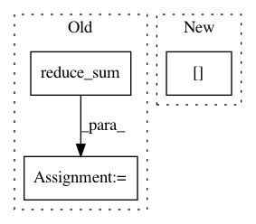

477c6ffca3eeccac0402d3530886e16cb5a6d7f7,txtgen/losses/mle_losses.py,,average_sequence_softmax_cross_entropy,#Any#Any#Any#Any#Any#,88
Before Change
losses = tf.nn.softmax_cross_entropy_with_logits(
labels=labels, logits=logits)
losses = _mask_sequences(losses, sequence_length, time_major)
seq_length_sum = tf.to_float(tf.reduce_sum(sequence_length))
loss = tf.reduce_sum(losses) / seq_length_sum
return loss
After Change
losses = tf.nn.softmax_cross_entropy_with_logits(
labels=labels, logits=logits)
losses = _mask_sequences(losses, sequence_length, time_major)
loss = tf.reduce_sum(losses) / tf.to_float(tf.shape(labels)[0])
return loss
In pattern: SUPERPATTERN
Frequency: 4
Non-data size: 3
Instances
Project Name: asyml/texar
Commit Name: 477c6ffca3eeccac0402d3530886e16cb5a6d7f7
Time: 2017-12-03
Author: zhiting.hu@petuum.com
File Name: txtgen/losses/mle_losses.py
Class Name:
Method Name: average_sequence_softmax_cross_entropy
Project Name: asyml/texar
Commit Name: 477c6ffca3eeccac0402d3530886e16cb5a6d7f7
Time: 2017-12-03
Author: zhiting.hu@petuum.com
File Name: txtgen/losses/mle_losses.py
Class Name:
Method Name: average_sequence_sparse_softmax_cross_entropy
Project Name: GPflow/GPflow
Commit Name: bd1e9c04b48dd5ccca9619d5eaa2595a358bdb08
Time: 2020-01-31
Author: st--@users.noreply.github.com
File Name: gpflow/kernels/misc.py
Class Name: Coregion
Method Name: K_diag
Project Name: GPflow/GPflow
Commit Name: d1ac7b831ad36cd0e4bdd7980819f83208345148
Time: 2018-02-07
Author: alex.ialongo@gmail.com
File Name: gpflow/expectations.py
Class Name:
Method Name: _expectation